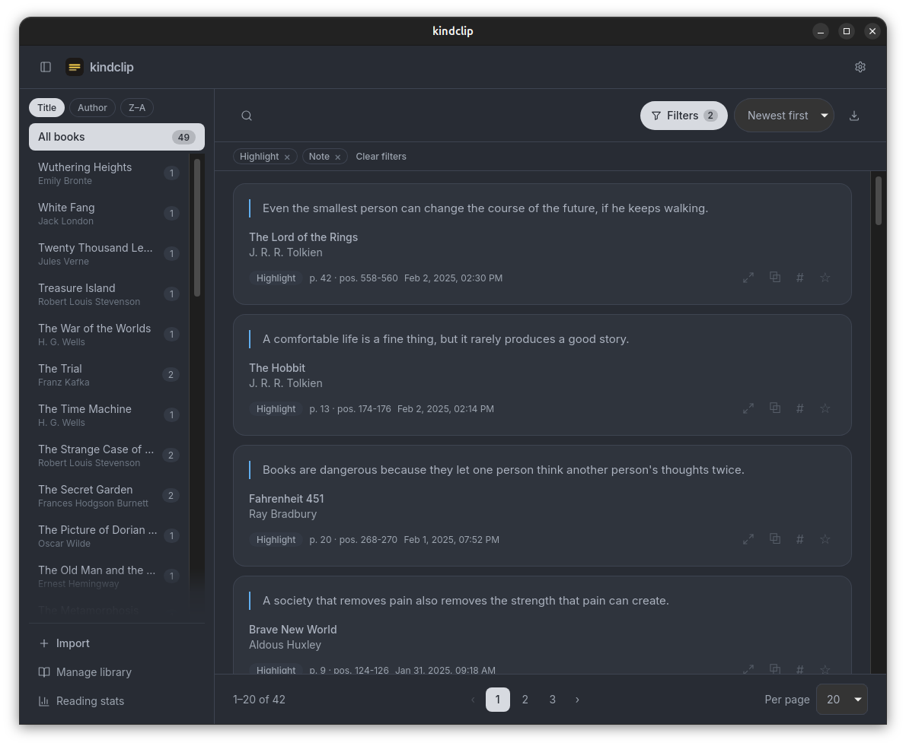
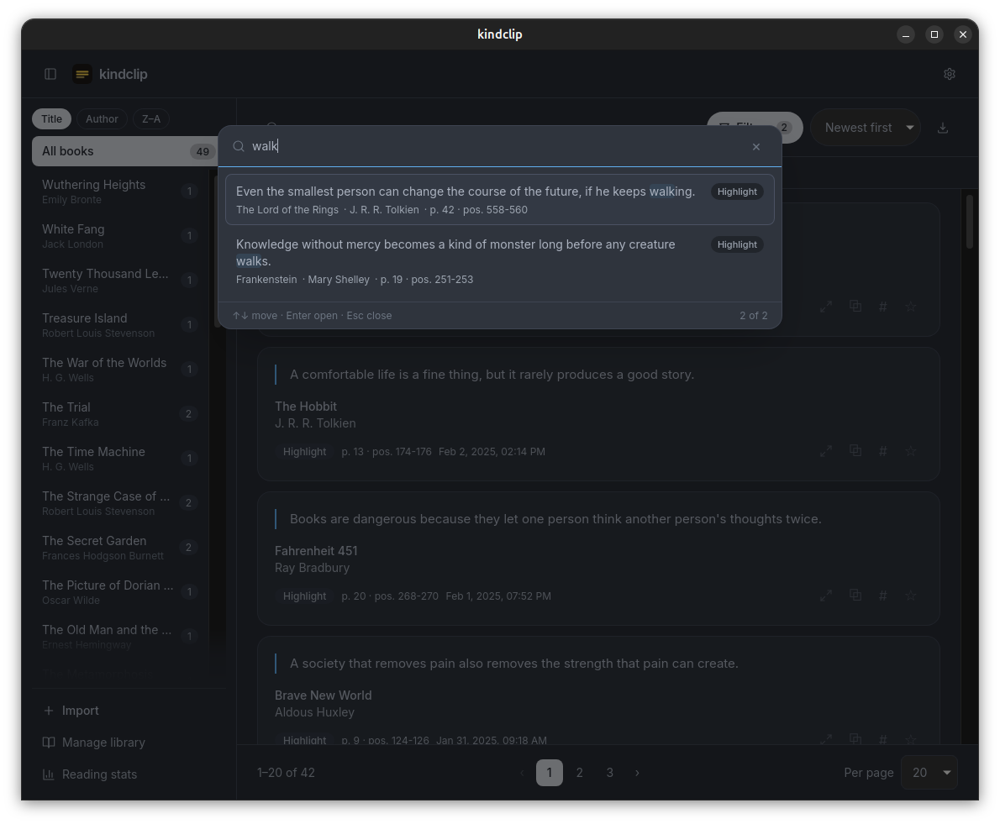

A parser that doesn't flinch
UTF-8 or UTF-16, BOM or mid-file, six Kindle date locales, highlights, notes and bookmarks — including modern Spanish firmware. Duplicates are skipped by content hash on every import.
Desktop app for Kindle highlights · Tauri v2 · MIT
kindclip reads My Clippings.txt once and turns years of
highlights, notes and bookmarks into a fast, searchable library.
Local-first, keyboard-first, and native on Windows, Linux and macOS.
Linux·Windows·macOS·No account

No dashboards, no feeds, no subscriptions. A small tool that handles the whole loop: import once, find anything, keep what matters, take it with you.
UTF-8 or UTF-16, BOM or mid-file, six Kindle date locales, highlights, notes and bookmarks — including modern Spanish firmware. Duplicates are skipped by content hash on every import.
Full-text across content, title and author, accent- and
case-insensitive: every word must match, and hits are
highlighted in the list and the reading view. Or press
Ctrl/Cmd+P to search every clipping at once.
Favorites, free-form tags with inline suggestions, an edited-notes filter, and library tools to rename or merge books, delete a book, or undo one import. Everything lives in one SQLite file.
Any clipping opens full-window, with ←/→ through the filtered
list and Esc to get back. Notes are editable inline with an
Edited badge, a reset to the original, and the promise
that My Clippings.txt is never modified.
Copy a highlight as a Markdown quote with author, book and page, or export the filtered view to Markdown, JSON or CSV with favorites and tags marked. Backups are verified SQLite snapshots, previewed before restore, and the replaced file is kept aside. The old one is always recoverable.
A small Tauri binary that starts fast and remembers its window. System light/dark plus four dark palettes, five UI languages, bundled Inter and a keyboard-first interface. Nothing leaves your machine.
A light theme and four dark palettes — Atom One Dark, Darcula, Nord and Solarized Dark — ported token by token. Every text pair is tuned to clear WCAG AA on the surfaces it lands on.
A comfortable life is a fine thing, but it rarely produces a good story.
The Hobbit
HighlightEven the smallest person can change the course of the future, if he keeps walking.
The Lord of the Rings
HighlightBooks are dangerous because they let one person think another person's thoughts twice.
Fahrenheit 451
HighlightKnowledge without mercy becomes a kind of monster long before any creature walks.
Frankenstein
HighlightA society that removes pain also removes the strength that pain can create.
Brave New World
Highlight
Ctrl/Cmd+P searches the whole library — across books
and active filters, newest first. Move with ↑/↓, press Enter to
read, Esc to get back. The footer counts the matches; your current
filters stay exactly where they were.

Download the build for your platform, copy one file from the Kindle, and import. Re-import any time: duplicates are skipped and new highlights are added.
Linux .AppImage/.deb/.rpm,
Windows .exe/.msi, or macOS
.dmg for Apple Silicon and Intel.
Connect the Kindle and copy
documents/My Clippings.txt to your computer.
Press Import or drop the .txt
anywhere on the window. Search, tag and star; copy a quote or
export the filtered view whenever you want it elsewhere.
Heads-up: macOS and Windows builds are unsigned, so Gatekeeper or SmartScreen will warn on first launch. The source is public — build it yourself if you prefer.
| Linux | .AppImage · .deb · .rpm |
|---|---|
| Windows | .exe · .msi |
| macOS | .dmg, ARM + Intel |
| License | MIT, forever |
Built on every tag by GitHub Actions.
Never. The file is read on import; your original content stays
untouched. Note edits live in kindclip.db next to
the original text, and you can reset any note to what the Kindle
wrote.
In one SQLite file in the standard per-OS config directory:
~/.config/app.kindclip/kindclip.db on Linux,
%APPDATA%\app.kindclip\kindclip.db on Windows, and
~/Library/Application Support/app.kindclip/kindclip.db
on macOS. Nothing is uploaded, ever. Delete the file to wipe the
library and re-import from scratch.
Preferences → Data saves a consistent snapshot of the database
with a date in the name. A restore verifies the file is real
SQLite with the kindclip tables, previews its contents, and keeps
the replaced file as kindclip.db.before-restore.
Re-importing restores clippings, but not favorites, tags or
edited notes — the backup covers those.
No. kindclip is a desktop app built with Tauri: a Rust backend, a Svelte 5 frontend and SQLite, shipped as small native binaries. The reading happens on your machine.